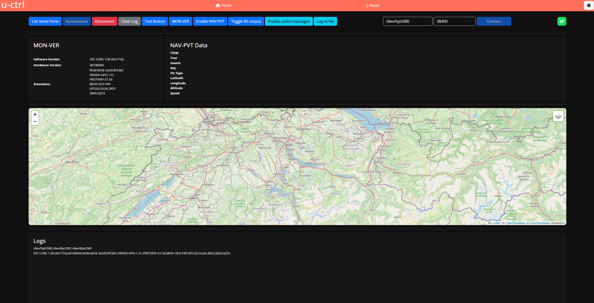
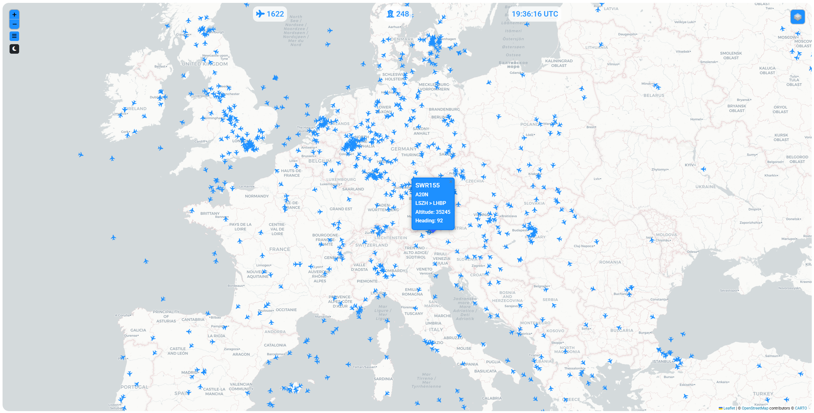
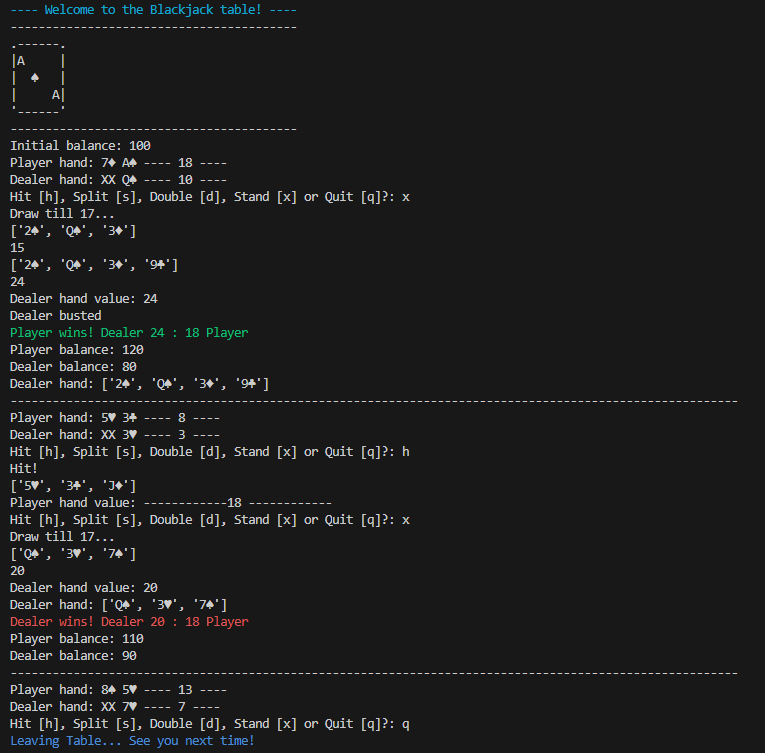
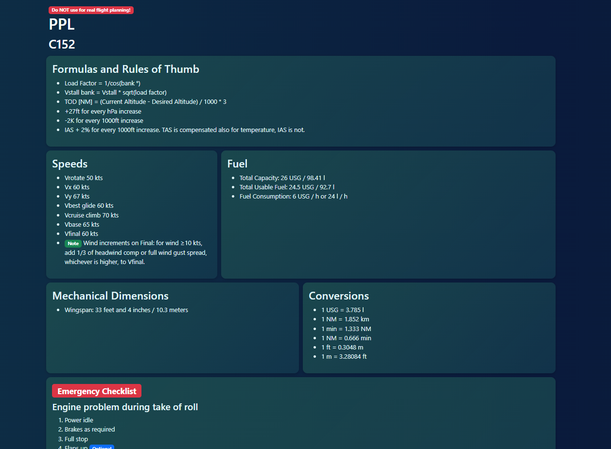

Hi, welcome to my webpage. My name is Philipp, I am 31 years old and passionate about tech, aviation and sports.
Feel free to explore the page, it is still under construction 🚧.
With this application it is possible to connect (automatically or manually) to a u-blox GNSS receiver. There is the option to enable the NAV-PVT message in case it is not enabled by default. The NAV-PVT message needs to be enabled to show the position on the map. More features planned, WIP 🚧!
 GitHubThis is a webpage that displays virtual air traffic currently logged in to the VATSIM network.
 GitHub Live PreviewSimple blackjack game written in Python. To run the game run the command "python -m pip install -r requirements.txt". After the requirements are installed, run "python blackjack.py".
 GitHubThis page is a collection of useful information gathered on one page which I can be use during my PPL.
 GitHub Live Preview